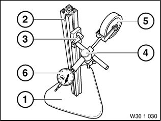
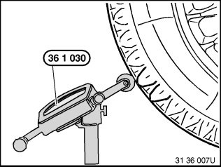
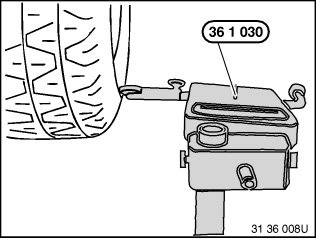

36 10 713 Checking One Road Wheel on Balancing Machine For Lateral and Radial Runout (Wheel Removed)
36 10 713 Checking one road wheel on balancing machine for lateral and radial runout (wheel removed)Special tools required:
Necessary preliminary tasks:
^ Remove wheel.

Mount wheel in balancing machine.
To avoid retooling errors, fit the wheel on the balancing machine in the same way as it is also fitted on the car (valve position facing down).

Use suitable wheel centering element supplied with corresponding balancing machine.
1. Basic flange
2. Wheel centering element
3. Type flange
4. Clamping nut
Also refer to section on Workshop Equipment.

Use special tool 36 1 030 for testing.
Special tool 36 1 030 consists of:
(1) Standing base 36 1 031
(2) Post with clamp 36 1 032
(3) Holder with clamp 36 1 033
(4) Clamp 36 1 034
(5) Measuring roll 36 1 035
(6) Dial gauge 36 1 036

Position special tool 36 1 030 on tire tread surface.
Turn wheel by hand and measure max. radial tire runout.
Note:
Measuring device must be vertical to tire tread.

Position special tool 36 1 030 on tire sidewall.
Turn wheel by hand and measure max. lateral tire runout.
Note:
Measuring device must be vertical to tire side wall.
Never measure on printed text on tire!
If necessary, check disc wheel (rim) for radial and face runout.